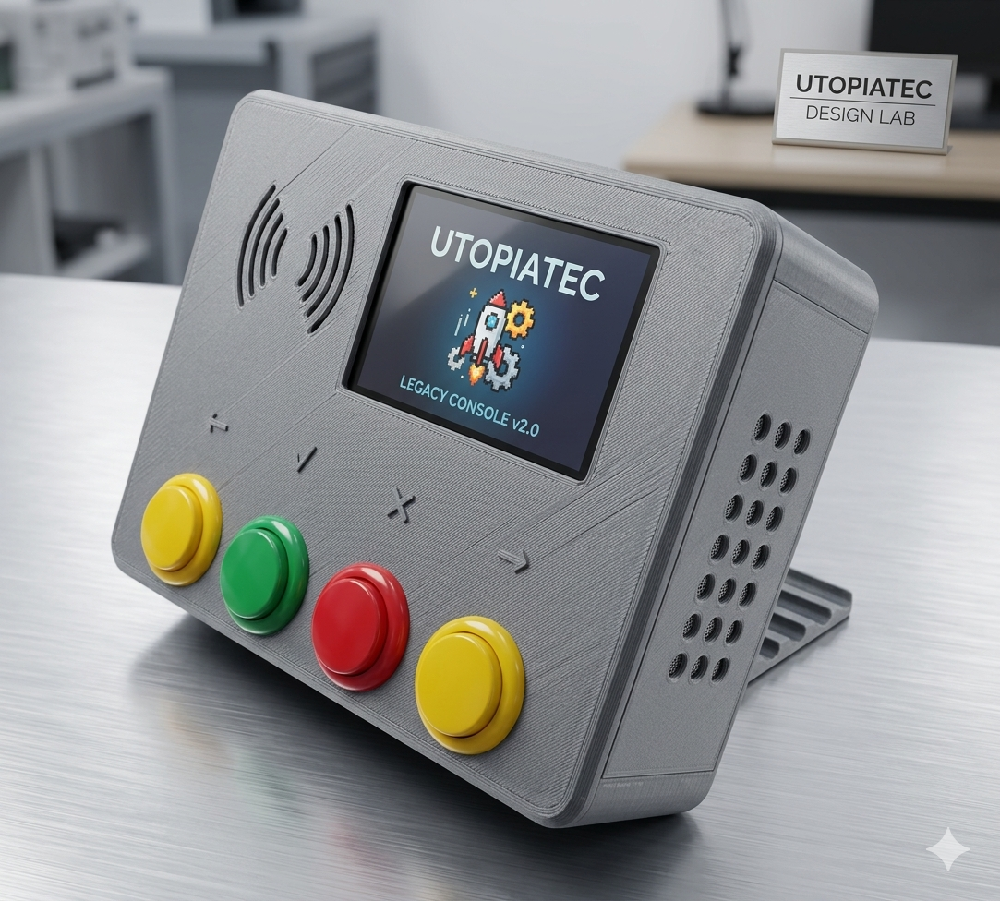

Desarrollamos soluciones inclusivas enfocadas en educación, comunicación aumentativa y reutilización de hardware de bajo costo y alto impacto social.
Sumate al Proyecto
Diseñado para la reutilización de computadoras de bajos recursos. Ideal para contextos con infraestructura tecnológica limitada o sin conectividad a internet.
Sistema de Comunicación Aumentativa y Alternativa basado en hardware accesible, orientado a personas con dificultades en el habla o la comunicación de forma físico-digital.
La idea surge en 2024 en las aulas de una escuela primaria de la ciudad de Santa Fé en la República Argentina. Al identificar las dificultades concretas que generaban el equipamiento obsoleto y el acceso desigual a las herramientas digitales, decidimos accionar.
Hoy combinamos arquitectura de software modular, diseño 3D y enfoque pedagógico gracias a un equipo interdisciplinario comprometido con la inclusión.
Celina Del Turco presentó los fundamentos de Utopía Tecnología en uno de los eventos de software y tecnología más importantes de Latinoamérica.
"La innovación no viene siempre desde las grandes empresas; a veces empieza desde el cartón, la cinta y lo que tenemos a mano para resolver un problema real."
Utopía Tecnología es posible gracias a un espacio interdisciplinario que une la ingeniería de software, la educación técnica, el diseño y la salud comunitaria.
Dirección general del proyecto, diseño de dispositivos de alfabetización y desarrollo de sistemas de Comunicación Aumentativa y Alternativa (CAA).
Asesoramiento y colaboración en arquitectura de software modular, optimización de sistemas y estrategias de integración tecnológica escalable.
Acompañamiento pedagógico y asesoramiento en la adaptación de herramientas dentro del ámbito de las escuelas técnicas y la formación profesional.
Aportes y perspectiva sobre dinámicas de inclusión escolar, procesos de alfabetización temprana y accesibilidad en contextos reales de aula.
Apoyo puntual en modelado mecánico, diseño 3D y prototipado físico de los componentes y carcasas de los dispositivos adaptados.
Buscamos acompañamiento estratégico y financiamiento orientado a prototipado, validación técnica en entornos reales y alianzas institucionales.